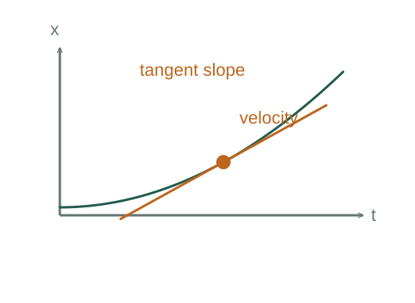

Velocity and acceleration from derivatives
An average velocity measures change over a finite interval. Instantaneous velocity asks what that rate approaches as the interval shrinks. Acceleration repeats the same construction for velocity.
What the symbols mean
x(t): position; Δt: a nonzero time interval; vₓ and aₓ: signed components along the x axis.
When this applies
The required derivatives exist at the time of interest. An idealized instantaneous impact may require impulse instead.
Understanding the relation
Here the starting relation defines the quantity being discussed. We can understand that definition and derive its consequences, while keeping the definition itself distinct from those consequences.

Start with a measurable average
Record two positions and divide their difference by the elapsed time. Geometrically this is the slope of the secant connecting two points on x(t).
Shrink the interval
The limit gives the slope of the tangent. This is the definition of instantaneous velocity, not an independent experimental law.
Differentiate again
Apply the same rate construction to velocity. Positive acceleration means that the signed velocity is increasing, which can mean either speeding up or slowing down.
Reconstruct motion from a rate
Knowing acceleration does not determine a unique trajectory until an initial velocity and an initial position are supplied. Each integration introduces one such initial value.
A closer lookHow do initial values enter an integral? ↗A worked example
For x(t) = (3 m/s²)t² − (2 m/s)t, velocity is (6 m/s²)t − 2 m/s and acceleration is 6 m/s². At t = 0 the object moves in the negative x direction.
Derivation behind this calculation ↗A point to keep straight
Distance divided by time gives average speed. Displacement divided by time gives average velocity.
Check the assumptions and derivation ↗